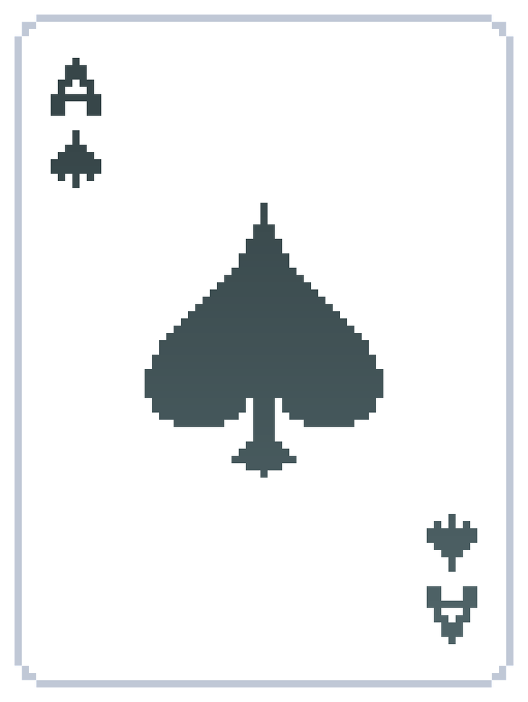
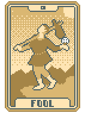
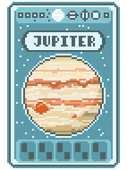
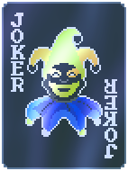
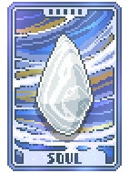

¿Qué es balatro?
Balatro es un juego tipo roughlike inspirado en el poker, tu misión es pasar por ciegas acumulando puntos, para lograr esto tienes varías ayudas especiales de comodines y otros recursos.
Cartas del juego:

Cartas de juego

Comodines

Tarot

Planetas

Efectos

Cartas espectrales
tienda de merch


Contacto del creador de la página
jbonneth@eafit.edu.co